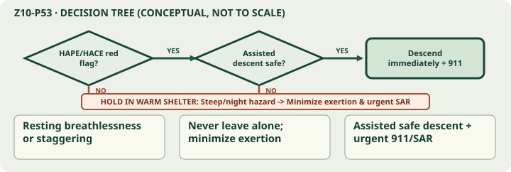

Z10-P53 · Wilderness medicine · New manuscript
Execute assisted descent and rescue for life-threatening HAPE and HACE
Recognize fatal high-altitude pulmonary or cerebral edema and organize immediate assisted descent and emergency care.
When it applies · Mountain travel at high elevation when a person develops resting breathlessness, persistent cough, staggering balance, or confusion.
Equipment · Emergency comms/SAR activation, warm layers, headlamps, and group support for safe assisted descent.

Actions
- Recognize HAPE (shortness of breath while resting, dry or pink frothy cough, chest tightness, extreme fatigue, bluish lips) and HACE (ataxia/staggering walk as if intoxicated, confusion, slurred speech, severe lethargy)—both are rapidly fatal without descent and medical care.[X09, T02]
- Activate emergency rescue immediately AND organize assisted descent to substantially lower elevation as soon as terrain, weather, and party safety permit—NEVER let an impaired HAPE/HACE patient descend alone or wait until morning if safe assisted descent is feasible.[X09, T06]
- Keep the patient warm, minimize their physical exertion (carry their pack, support balance closely, or await SAR evacuation if steep/night terrain makes moving unsafe), and leave prescription altitude medications strictly to clinicians or the patient's own prescribed regimen.[X09, M20]
Failure recognition · Leaving a confused, staggering hiker alone in a high-camp tent overnight hoping symptoms will clear by sunrise.[X09]
Verify · Confirm emergency rescue is notified, patient is never left alone, exertion is minimized, and safe assisted descent or SAR extraction is underway.[X09, T02]
Stop or change course · Any ataxia, confusion, resting breathlessness, or pink frothy cough is an absolute life-threatening emergency demanding descent and clinical care.[X09, T02]
Evidence and editorial notes
- M20 · NIH / MedlinePlus · First Aid Overview (current web edition)
- Section: Lay First-Aid Scope, Kit Readiness, and Documentation · Conditions: Pre-trip kit preparation and remote patient monitoring
Support: Maintain an inspected, unexpired first-aid kit matched to your actual training, keep written patient observations (time, responsiveness, breathing, symptoms, interventions) for EMS handoff, and practice skills in certified courses.
Limitations: Carrying advanced medical instruments without clinical training adds risk rather than capability. · Conflicting evidence: None; aligns with ARC and NPS-K.
Editorial note: Anchors kit sizing, SOAP-style lay observation logs, and scope-of-practice cards. · Specialist reviewer: Wilderness EMS and clinical education
Primary source · checked 2026-11-24 - T02 · American Red Cross · First Aid Steps (current web edition)
- Section: First Aid Steps > Call 9-1-1 · Conditions: Lay emergency response to unresponsiveness, abnormal breathing or severe bleeding
Support: Activate EMS and get needed equipment. Follow dispatcher directions and act within training.
Limitations: Remote locations may delay EMS arrival, requiring sustained stabilization after activation. · Conflicting evidence: None; aligns with NPS-E.
Editorial note: Mandates early emergency activation and dispatcher adherence. · Specialist reviewer: EMS and wilderness medicine
Primary source · checked 2026-11-24 - T06 · NPS · Outdoor Emergency Plan (current web edition)
- Section: If you get lost or hurt; call for help · Conditions: Outdoor US emergency
Support: Communicate location, last known point, situation and needs. Stay put when unable to establish a safe route unless immediate danger requires movement.
Limitations: Cell signal is unreliable in backcountry terrain; pre-trip plans bridge communication gaps. · Conflicting evidence: None; core lost-person decision rule.
Editorial note: Foundation for stay/signal/move and dispatch handoff cards. · Specialist reviewer: Search and rescue
Primary source · checked 2026-11-24 - X09 · CDC · Travel to High Altitudes (current web edition)
- Section: Travel to High Altitudes > Acclimatization, AMS, HAPE and HACE · Conditions: Mountain travel above ~8,000 feet (2,500 meters)
Support: Ascend gradually to acclimatize; recognize Acute Mountain Sickness (headache, nausea, fatigue) and life-threatening HAPE (shortness of breath at rest, cough) or HACE (ataxia, confusion), for which immediate descent and medical care are essential.
Limitations: Physical fitness does not prevent altitude illness; individual susceptibility varies unpredictably. · Conflicting evidence: None; aligns with NPS-MTN.
Editorial note: Core physiological evidence for Z12 mountain-altitude cards. · Specialist reviewer: Mountain medicine and high-altitude safety
Primary source · checked 2026-11-24
Source lineage · CDC Travel to High Altitudes; new manuscript · Classification · New manuscript.